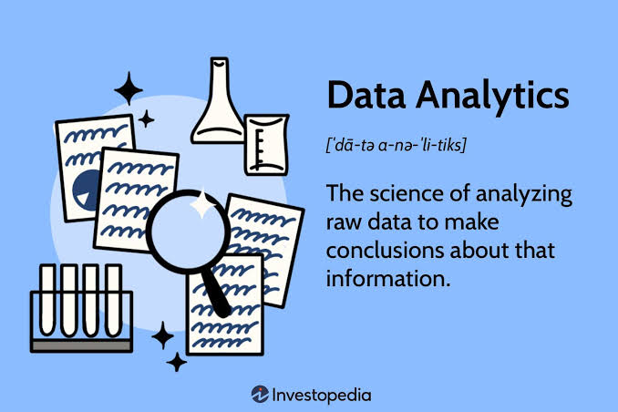

MIS & Proper AI UseWebsite OverviewAbi PolleyOctober 28, 2026 Management Information Systems, or MIS, is a combination of technology with business practices such as accounting and marketing that is used to manage businesses in a technology-focused world. Data is at the center of MIS, as many processes involve organizing and regulating data for businesses. Large scale companies deal with large scale amounts of data, and MIS is a crucial development for businesses, with processes like data management and analytics, which drive business decisions. MIS can be benefitted using Artificial Intelligence (AI), which can automate tasks and improve the function of traditional MIS systems. Because MIS is a digital function of business, it can easily be assisted by AI. With the use of AI in many spheres of the world comes discussion about the proper use of AI, how should it be used as a helpful tool and not completely overtaking skills that employees and managers have worked to develop. Management Information Systems (MIS) combines technology with business practices, such as accounting and marketing, to help organizations operate effectively in an increasingly technology-driven world. Data is at the core of MIS, as many of its processes involve collecting, organizing, analyzing, and managing information to support business operations. Large-scale companies generate and process vast amounts of data, making MIS essential for efficient data management and analytics that inform business decisions. Artificial intelligence (AI) can enhance MIS by automating tasks, improving data analysis, and increasing the efficiency of traditional systems. Because MIS relies heavily on digital processes, it is particularly well suited to the integration of AI technologies. However, as AI becomes more prevalent across industries, it is important to consider how it can serve as a helpful tool to improve productivity and decision-making without replacing the knowledge, skills, and expertise that employees and managers have developed.
|